Abstract
Key Findings
7-channel vs 3-channel output
CT-Touch decomposes contact forces into SA-I (12.7%), FA-I (17.4%), FA-II (6.2%), CT (0.01%), and normal force (63.8%) — information invisible to force-only models.
CT responds only on hairy skin
CT afferent activation is zero on glabrous skin (palms, fingertips) and non-zero on hairy skin (forearms, trunk, face) — matching human neuroanatomy.
Velocity-tuned inverted-U
CT firing rate peaks at ~3 cm/s stroking velocity, following the log-Gaussian model from Löken et al. (2009).
Sample efficiency
CT ON best models require far fewer training steps (50K–100K) to match or exceed CT OFF best (1M), suggesting CT afferent signals accelerate learning.
Reach task advantage
CT ON shows consistent 10–18% improvement across all training horizons with lower variance, suggesting more stable learning dynamics.
Efficient representation
CT ON uses ~50% less tactile activation in the reach task, indicating the multi-receptor model learns a more compact sensory representation.
RL Results
PPO training across 10 seeds (42, 123, 7, 256, 512, 1024, 2048, 314, 777, 55) on Mac Studio M1 Max 64 GB. Training steps range from 50K to 1M for both self-body and reach tasks.
Self-body Task
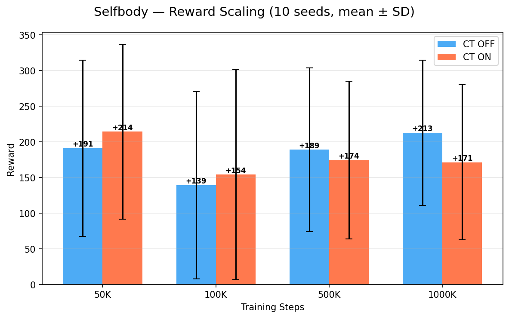
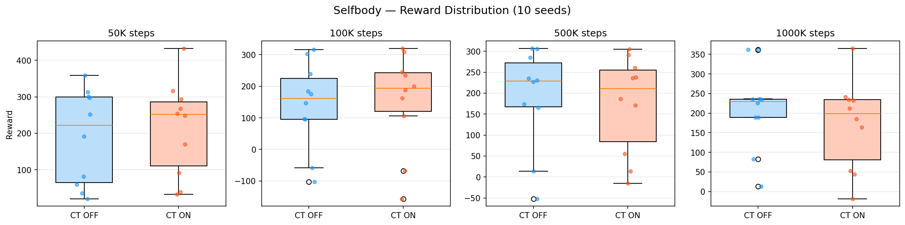
Reach Task
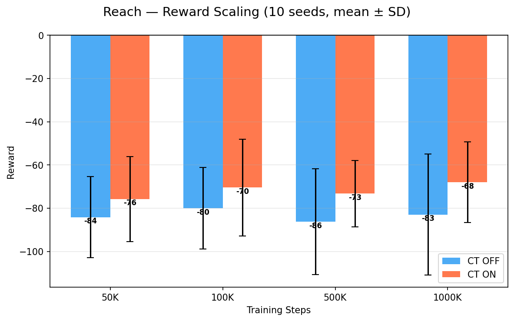
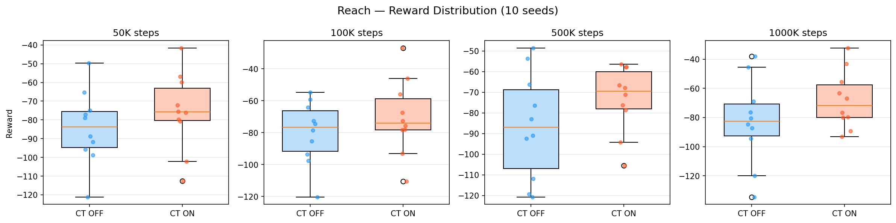
Learning Curves
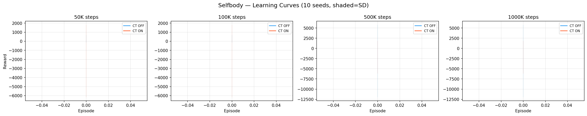
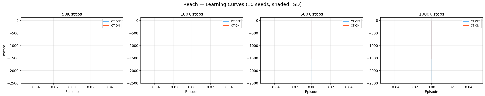
CT-Touch Module
CT-Touch extends MIMo's tactile system from a single force-vector sensor to a biologically grounded 4-receptor model. Each sensor point outputs responses for SA-I (Merkel), FA-I (Meissner), FA-II (Pacinian), and CT afferents, with body-site-specific distributions distinguishing hairy and glabrous skin.
Mechanoreceptor Response Models
CT-Touch models four mechanoreceptor types:
- SA-I (Merkel): Sustained pressure response with compressive nonlinearity.
Output:
log(1 + F)where F is the normal contact force. Models slow-adapting pressure encoding essential for perceiving object shape and weight. - FA-I (Meissner): Velocity-proportional response capturing dynamic changes
in contact force. Output:
min(|dF/dt|, 10). Models rapid adaptation critical for slip and texture detection during manipulation. - FA-II (Pacinian): Acceleration-based response sensitive to vibration.
Output:
|d²F/dt²|. Models vibration-tuned detection peaking at ~250 Hz, enabling tool-mediated contact sensing. - CT (C-tactile): Velocity-tuned affective touch channel found exclusively in hairy skin.
Output:
r_CT(v, T) = r_max · exp(-(ln v - ln v*)² / 2σ²) · g(T), where v* = 3.0 cm/s (optimal stroking velocity), r_max = 30 Hz, σ = 1.0, and g(T) peaks at skin temperature ~32°C. Based on Löken et al. (2009, Nature Neuroscience) and corroborated by rodent C-LTMR electrophysiology (Abraira & Ginty, 2013). This inverted-U response captures the characteristic preference for gentle, slow stroking that humans rate as most pleasant.
Full implementation: ct_augmented_touch.py
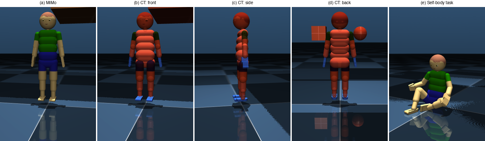
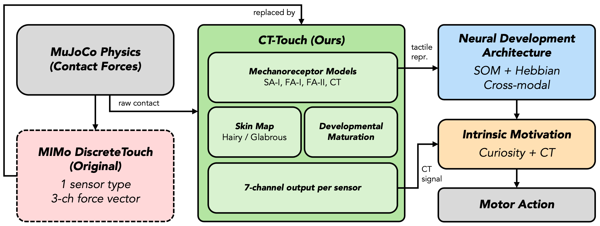
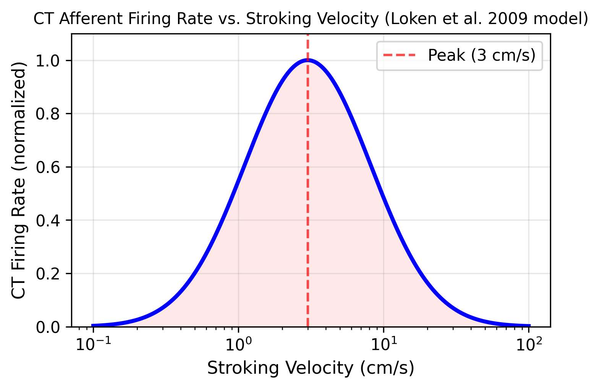
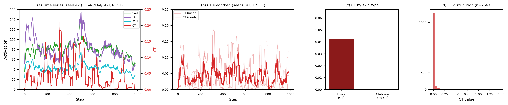
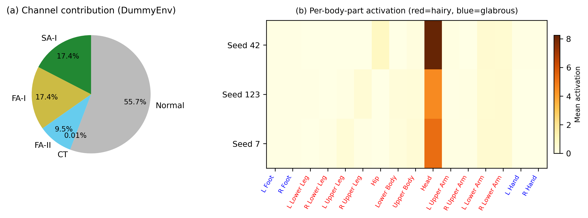
Video Demonstration
Best-performing models for each task and condition. CT ON best models achieve comparable or higher rewards with significantly fewer training steps.
Self-body Task
MIMo sits and reaches with the right arm to touch randomized body parts. CT ON best model achieved +432.6 reward in only 50K steps (vs CT OFF best +362.2 at 1M steps).
CT OFF — Best (seed=7, 1M steps)
Reward: +362.2
CT ON — Best (seed=512, 50K steps)
Reward: +432.6
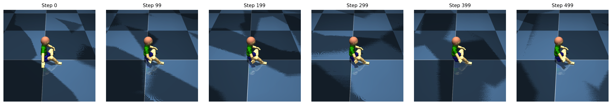
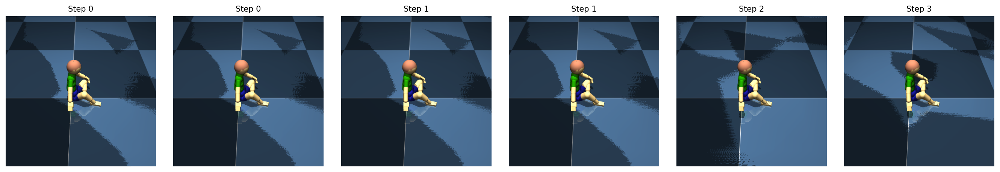
Reach Task
MIMo extends the right arm toward a hovering ball. CT ON best model achieved -26.9 reward in only 100K steps (vs CT OFF best -38.0 at 1M steps), demonstrating more sample-efficient learning.
CT OFF — Best (seed=42, 1M steps)
Reward: -38.0
CT ON — Best (seed=256, 100K steps)
Reward: -26.9
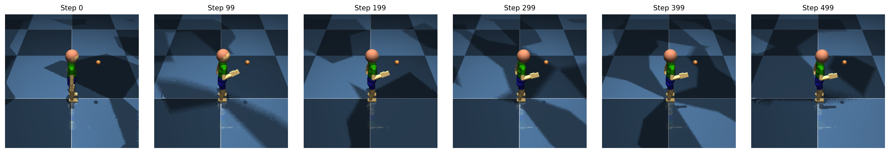
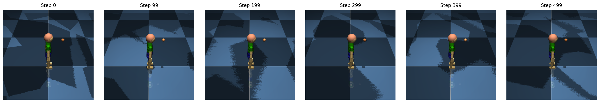
Acknowledgments
This work was supported by JSPS KAKENHI Grant Number 25K24420. CT-Touch builds upon the MIMo platform by Triesch Lab, Frankfurt Institute for Advanced Studies.